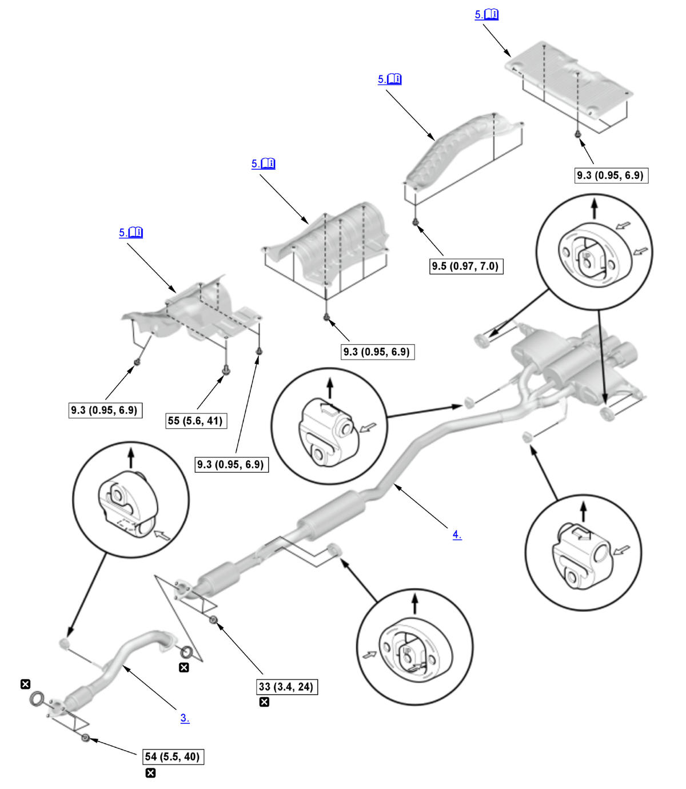

Removal and Installation: Procedure
NOTE:
Numbered call-outs in figure pertain to list numbers in following procedure.
Fig 1: Exploded View Of Exhaust Pipe And Muffler Components With Torque Specifications (K20C1 - 2017-21)

Courtesy of HONDA, U.S.A., INC. |
Detailed information, notes, and precautions |
 |
Torque: N.m (kgf.m, lbf.ft) |
 |
Replace |
- Engine Undercover - Remove
NOTE: Remove the necessary part(s).
- Rear Inner Fender - Remove
NOTE:
- When removing the muffler, do this procedure.
- Remove the appropriate portion of the rear inner fender.
- Exhaust Pipe A - Remove
- Muffler - Remove
- Heat Shield - Remove
Note for installation
When installing the heat shield, temporarily tighten the bolt , then tighten the bolts in the numbered sequence shown to the specified torque.
- All Removed Parts - Install
1. Install the parts in the reverse order of removal.